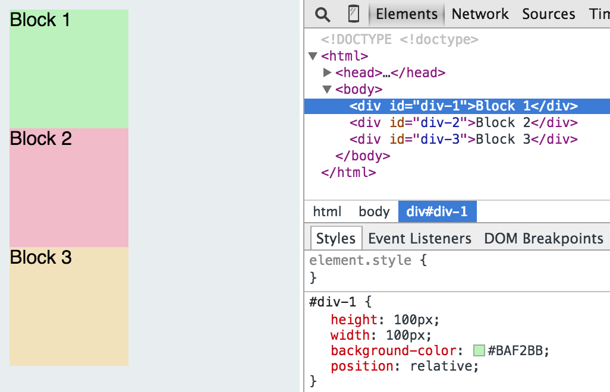
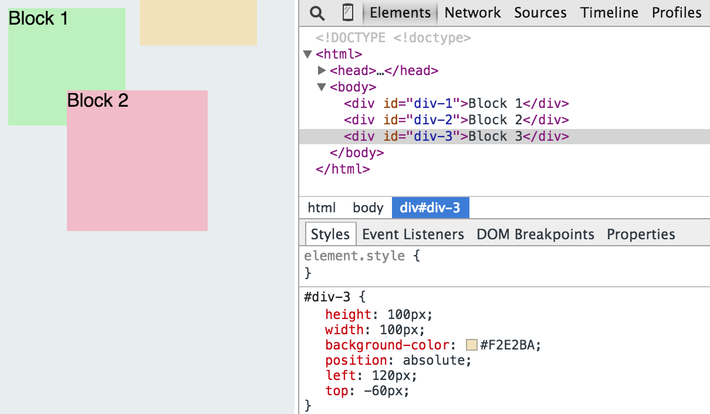

Relative, absolute and fixed: your CSS "ahah" moment
How to make your CSS feel comfortable
June 19th, 2015
Week #2 at Dev Bootcamp was all about HTML & CSS. Well, when it comes to starting from scratch, it's especially about CSS, which was to me trickier to understand. There are several key concepts to grasp before really mastering the stylesheet. Chief among these is the notion of positioning, more precisely the difference between relative, absolute and fixed.
Relative. The usage of the word 'relative' per-se can be a little confusing. The element actually has a relative position to: itself, if we don't specify any positioning attribute the blocks will be placed right below their parent in static position, see image #1. But the minute we start playing with those positioning attribute we can move the box around as if we were working in Office PowerPoint, see image #2.
Absolute. The absolute position can seem as the most powerful and convenient to use. The principle is simple: the box will default on the position of it's immediate parent that as a relative or absolute position and will only go where we inscruct it to, see image #3 & #4. To move the element we simply have to use the position attributes. Note that if there is no parent around the element will go all the way to the top, which corresponds to the html element. User-friendly but not recommended since the position of the element becomes independant of the position of any other element, which limits the display flexibility. Something more and more problematic in an all-responsive era.
Fixed. The fixed position can be seen as the absolute position but one-step-further. A fixed element will never move, even if we scroll it stays in place. A number of website have such feature for their header, where you can keep scrolling down but the top menu stays fixed. From what I understand so far this feature needs to be heavily tested, it reduces the effective browsing area of a page, which can be inconvenient on smaller mobile screens.
I hope the distinction is a little clearer for you know. As I mentioned earlier, CSS is not as straightforward as HTML. It takes a lot of practice and discipline to avoid falling in the trap of easy but not flexible styling.
As usual, I would love to get your feedback on this post. All the buttons are right below, no excuse!
Happy coding!